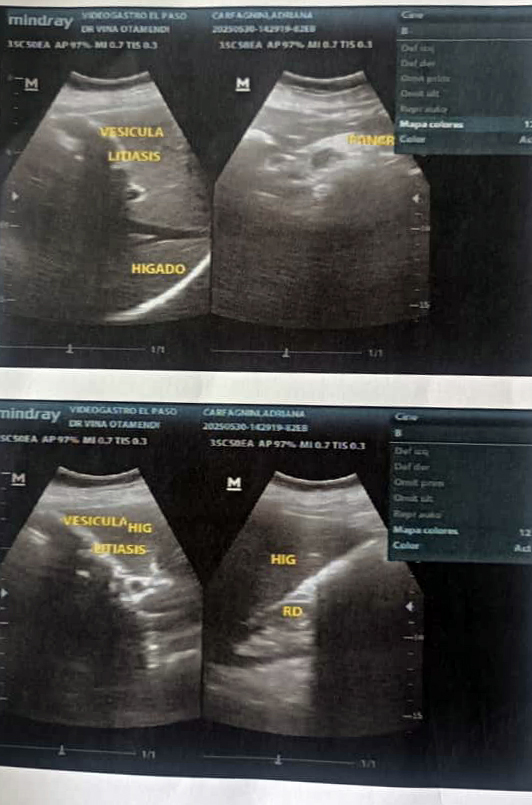

Informe Generale di Salute
Agosto 2025
Dati del Paziente
- Nome: Adriana Carfagnini
- Data di nascita: 17/01/1944 (81 anni)
- CI: 6.188.262
- Condizioni note: Ipertensione stadio II, Anemia microcitica cronica, Disturbo depressivo-ansioso, Disturbo cognitivo maggiore (demenza senile), Sindrome convulsiva in studio, Frattura anca destra (gestione ortopedica, non Qx, paziente in sedia a rotelle).
Consultazione Clinica
La paziente è stata valutata per emorragia digestiva inferiore (ematochezia con coaguli, Hb: 7,2 g/dL) che ha richiesto trasfusione di tre unità di concentrato globulare. Attualmente con segni vitali stabili.
Raccomandato trattamento con ferro orale, dieta, IBP e studi endoscopici (gastroscopia + colonscopia) al più presto.
Studi Eseguiti
Massa tumorale / Adenomegalia
Tumore o massa adenomegalica che occupa il retto superiore e parte del colon sigmoideo sinistro.
Colonscopia
- Ulcera del retto superiore + sigma distale
- Indicazione: TAC addome-pelvi con e senza contrasto

Figura 1: Colonoscopia
Ecografia Addominale
- Fegato normale
- Litiasi vescicolare multipla
- Aortosclerosi

Figura 2: Ecografia addominale
Biopsia gastrica
- Gastrite cronica erosiva moderata
- Metaplasia intestinale incompleta
- Assenza di Helicobacter pylori

Figura 3: Biopsia gastrica
Esami di laboratorio
| Data | Emoglobina | Ematocrito | Globuli Rossi | Globuli Bianchi | Piastrine |
|---|---|---|---|---|---|
| 21/05/2025 | 9,4 g/dL | 29,0 % | 3,95 ×10⁶/µL | 10,9 ×10³/µL | 410 ×10³/µL |
| 23/05/2025 | 7,8 g/dL | 23,4 % | 3,38 ×10⁶/µL | 4,8 ×10³/µL | 276 ×10³/µL |
Sintesi dei Reperti
- Anemia microcitica ipocromica severa
- Emorragia digestiva inferiore con necessità di trasfusioni
- Ulcera del retto superiore e sigma distale
- Massa tumorale/adenomegalica in retto e sigma
- Gastrite cronica erosiva con metaplasia intestinale
- Litiasi vescicolare multipla
- Disturbo cognitivo maggiore + depressione ansiosa
- Aortosclerosi